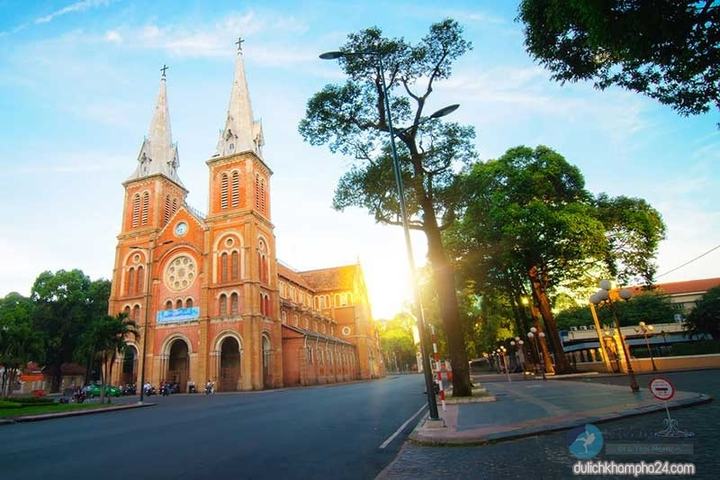
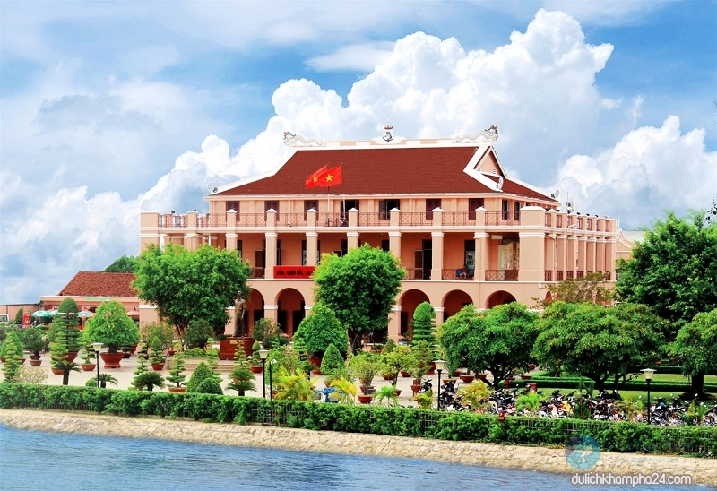
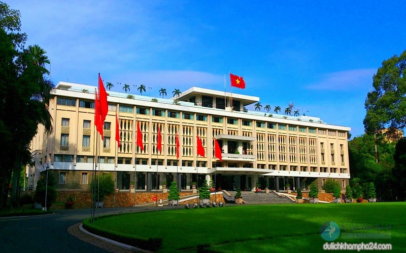
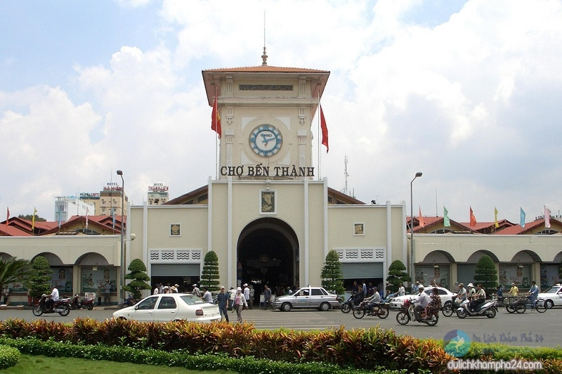
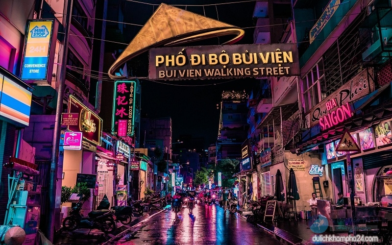

 Nhà thờ Đức Bà là một trong những địa điểm du lịch Sài Gòn quận 1, được xem như biểu tượng đặc trưng của thành phố. Tọa lạc ở vị trí trung tâm lý tưởng, thánh đường này nổi bật bởi kiểu kiến trúc châu Âu kết hợp cả phong cách Gothic và Roman với những bức tường gạch màu đỏ hồng, ô kính màu rực rỡ và đôi chuông lớn nhất Việt Nam. Nhà thờ không chỉ là thánh đường sinh hoạt của giáo phận Sài Gòn mà còn là niềm tự hào của người dân thành phố. Ngoài ra, quanh khuôn viên nhà thờ là cả thiên đường ẩm thực với các món bánh trái, đồ chiên, gỏi,… thơm ngon cho bạn tha hồ thưởng thức.
 Bến Nhà Rồng nơi in dấu hình ảnh vị cha già của dân tộc ra đi tìm đường cứu nước, là chứng nhân cho hai cuộc kháng chiến chống Pháp và chống Mỹ vĩ đại, cũng là một điểm đến không thể bỏ qua khi du lịch Sài Gòn. Tại đây hiện đang trưng bày hàng nghìn hiện vật và tài liệu cả trong và ngoài trời liên quan tới lịch sử, sự nghiệp hoạt động cách mạng của Bác. Thông qua việc tìm hiểu về bảo tàng du khách sẽ phần nào hiểu hơn về lịch sử dân tộc, quá trình vì nước vì dân của Bác, từ đó thấy yêu và tưởng nhớ hơn đến công đức của người.
Địa điểm đầu tiên phải nhắc đến chính là Dinh Độc Lập hay còn gọi là Hội trường Thống Nhất – chứng nhân cho sự chuyển giao lịch sử giữa hai chế độ và gắn liền với lịch sử của dân tộc Việt Nam. Đây từng là nơi làm việc của bộ máy chính quyền Việt Nam Cộng Hòa và cũng là một trong những di tích đặc biệt cấp quốc gia. + Địa chỉ: 135 Nam Kỳ Khởi Nghĩa, Quận 1 + Giờ mở cửa: 7h30 – 11h00 và từ 13h00 – 16h00 + Giá vé: 30k/người
Là cái tên đặc trưng nổi tiếng Sài Gòn, chợ Bến Thành nằm ngay trung tâm thành phố, cả 4 ngõ đều giáp với những con đường lớn. Chợ vừa là nơi giao thương, trao đổi, mua bán hàng hóa vừa là điểm du lịch thu hút nhiều du khách, nhất là khách du lịch nước ngoài. Tới đây bạn sẽ tìm thấy rất nhiều mặt hàng có thể mua về làm quà cho gia đình, bạn bè và thưởng thức các món ăn Việt Nam truyền thống như bánh canh, bánh bèo, bánh chiên xù,… Về đêm chợ nhộn nhịp hẳn lên với những gian hàng quần áo, đồ lưu niệm, quán ăn tấp nập người qua kẻ lại. Nhưng một lưu ý nhỏ nếu có ý định mua sắm bạn nên mặc cả để được giá hời nhất. + Địa chỉ: Nằm giữa các đường Phan Châu Trinh, Phan Bội Châu, Lê Thánh Tôn, quảng trường Quách Thị Trang, P.Bến Thành – quận 1. + Giờ mở cửa: 7h00 – 19h00 + Giá vé: Miễn phí
 Nếu Hà Nội có phố bia Tạ Hiện thì Sài Gòn có phố tây Bùi Viện , bởi thế có dịp lang thang thành phố này bạn nhất định phải ghé qua đây. Phố Tây là điểm đến vô cùng hấp dẫn với nhiều hoạt động giải trí và ẩm thực đường phố đặc sắc. Những màn trình diễn nhạc live, pub, bar,… náo nhiệt rất dễ lôi cuốn người khác. Có lẽ đây là một trong những nơi tuyệt vời để bạn cảm nhận được hết cái hồn của một vùng đất mà nhiều người vẫn gọi là thành phố không ngủ. Tuy nhiên, phố Bùi Viện chỉ mở mở cửa phục vụ người dân và du khách vào 2 ngày cuối tuần thôi nhé!